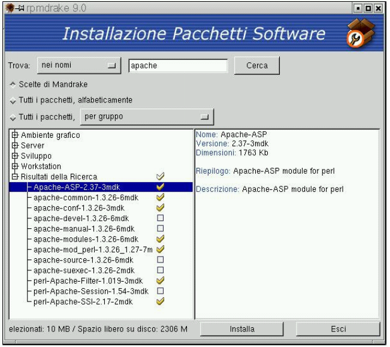

3.6. How to install PHP-Nuke locally
A PHP-Nuke installation on your own computer will give you the opportunity to test the whole spectrum of functionalities offered, as if you were online and your system were hosted in your ISP. But in order to start working on PHP-Nuke locally, you must have a web server installed on your box. In this section we will cover the necessary steps towards a working PHP-Nuke environment (Apache + PHP + MySQL ) under Windows and Linux.
For Windows, there are various packages you can choose from - they will install Apache, PHP and even MySQL for you and will provide a ready-to-use environment for the installation of PHP-Nuke. Among them, there are easyPHP (Section 3.6.1), XAMPP (Section 3.6.2) and Apache2Triad (Section 3.6.3).
3.6.1. easyPHP
After the download of easyPHP (version 1.6 or later), istallation is really easy: just click the setup icon to start it. You will be asked a few questions in the processes and that's all. The first screen is a welcome message and you only have to click on “next” (“suivant”). You will then be presented with screens like licence etc. and you can continue clicking on “next” (“suivant”), until you reach the screen that asks you where you want to install easyPHP (Figure 3-17), in which case you just choose the right path (if you have doubts about the right path, you can leave it to the default just as well).
Continue clicking on “suivant” until the end of the installation, when you have to click on “terminer” to end it. easyPHP is now installed.
But where should you install PHP-Nuke in a system with easyPHP installed? Suppose you installed easyPHP in a folder like c:\easyphp. Open that folder and you will find various subdirectories. The one that is important is www. It is under the www folder that the local copy of Apache will expect the files to process - and it is exactly there where you should install PHP-NukeI in the c:\easyphp\www folder.
We must still explain a couple of elements of easyPHP's functioning. Once you start the easyPHP application, you will find an icon in the bottom bar, to the right of your screen, that resembles an “e” with a small red point (Figure 3-18). If the red point is lighting, the server is active, if it is dimmed out, the server is shut down.
To administrate easyPHP, you only have to click on that black “e”. A right click with the mouse will offer a menu with all commands available for the server administration, a double click with the left mouse button will instead offer an information screen.
3.6.1.1. How to check a successful installation
To make sure that Apache and PHP have been installed correctly on our system, we will use the phpinfo() function of PHP, which asks the server to give information about the PHP configuration. If we get a screen like the one of Figure 3-19, then everything is working correctly.
To construct a file that uses the phpinfo() function, you can either use the text.php script of Section 3.9.1.1, or, even more simply, create a text file (with a decent text editor, see also Chapter 11) that contains only the line
<? phpinfo(); ?> |
Save the file under the name, say, info.php and move it to the www folder of the easyPHP directory (we talked about it above). Then enter the URL
http://localhost/info.php |
in the address bar of your browser and you should get (among other information) the screen of Figure 3-19.
3.6.2. XAMPP
XAMPP is an easy to install Apache distribution containing MySQL, PHP and Perl. XAMPP is really very easy to install and to use - just download, extract and start.
The distribution for Linux system (tested for SuSE, RedHat, Mandrake and Debian) contains: Apache, MySQL, PHP & PEAR, Perl, ProFTPD, phpMyAdmin, OpenSSL, GD, Freetype2, libjpeg, libpng, gdbm, zlib, expat, Sablotron, libxml, Ming, Webalizer, pdf class, ncurses, mod_perl, FreeTDS, gettext, mcrypt, mhash, Turck MMCache, SQLite and IMAP C-Client.
The distribution for Windows 98, NT, 2000 and XP contains: Apache, MySQL, PHP + PEAR, Perl, mod_php, mod_perl, mod_ssl, OpenSSL, phpMyAdmin, Webalizer, Mercury Mail Transport System for Win32 and NetWare Systems v3.32, JpGraph, FileZilla FTP Server, mcrypt, Turck MMCache, SQLite, and WEB-DAV + mod_auth_mysql. The versions of the programs included in the latest version for Windows are:
Apache 2.0.48
MySQL 4.0.16
PHP 4.3.4
Openssl 0.9.7c
SQLite 2.8.6
mod_php 4.3.4 + mod_perl 1.99_10 + mod_ssl 2.0.48
To install XAMPP you only need to download and extract XAMPP, that's all. There are no changes to the Windows registry and it's not necessary to edit any configuration files. It couldn't be easier!
To check that XAMPP is working some sample programs are included, there is a small CD collection program (written in PHP using MySQL) and a small guest book software (written in Perl) and several other utilities.
If you decide that XAMPP isn't needed any more just delete the XAMPP directory and it's completely removed from your system.
 | On the press: Call for donations |
|---|---|
On December 19, 2003, someone applied to the German Patent and Trademark Office for the rights to the "XAMPP" name. This person was not one of the XAMPP developers, but someone totally unknown to them. The trademark application is a danger for the project's future, since the applicant could - if no legal measures are taken - forbid that the XAMPP developers use that name for their software or do business taking advantage of the name's popularity. The XAMPP developers call on the project's website for donations to help counter this threat with legal means. Whether you are a new XAMPP user, a friend of Apache Friends, or just someone who would like to help, please take the time and make a donation to the XAMPP project. |
3.6.3. Apache2Triad
Apache2Triad offers the following goodies, according to the Description:
Apache 2.0.47 , MySQL 4.0.13 , OpenSSL 0.9.7b PHP 4.3.3 , Perl 5.8.0 , Tcl 8.4.2 , Python 2.2.2 plus PHP-Nuke 6.8 , PHPmyadmin 2.5.2 , AWStats 5.7 plus Stunnel 4.04 , SSLCert 1.0 plus Xmail 1.1.6 and SlimFTPd 3.13 plus UebiMiau 2.7.2 and PHPXmail 0.33 all configured and easy to install and easy to customize as it has the cleanest layout and structure there is and is updated for every new release of the software it contains plus The Apache2triad Control Pannel suite of tools plus Full documentations plus Unparalelled Installer.
The homepage of the program is Apache2Triad. Apache2Triad is not free for commercial usage: if your company wants to use Apache2Triad you must purchase it for 15$, which is certainly worth the money if you only think at the frustration it saves you by installing all the above packages for you.
3.6.4. Apache, PHP and MySQL on Mandrake Linux
We will describe how to get a functioning, local installation of the Apache-PHP-MySQL trio on a Linux system - we chose Mandrake Linux for this purpose, but the process is similar with other distributions. We will use visual tools for our purposes, making the assumption that, whoever is capable of compiling the binaries from the source code himself, will not need our guidance.
Figure 3-20. RPMdrake: selecting the Apache package(s) for installation.

RPMdrake: selecting the Apache package(s) for installation.
The most simple thing to do to get Apache, PHP and MySQL installed under Linux, is to install the appropriate packages from the CD. For this, we will use the software application tool called RPMdrake; upon execution, it will ask for the root password; after we enter it, we will be presented a screen that asks us what we want to install. We enter “Apache” in the aproppriate field and in the sequence we choose the main Apache package (Figure 3-20). RPMdrake will ask us if we also want to install the packages of the “dependencies” (i.e. packages which the main package we selected depends on). It is important to answer with “yes” here.
We then click on “install” and we are asked to insert the CD (or the CDs) containing the RPM packages. Once Apache has been installed, we open the Mandrake Control Center and click on “Start” for the httpd service (Figure 3-21).
The last control step is to open our browser and instruct it to open http://localhost/. If the browser's response is Apache's Welcome Page, we are done.
We have to repeat the above operations in the same identical way for the PHP and MySQL packages. In order to make the MySQL database service available, we have again to go to Mandrake Control Center and click on “Start” for the mysql service - PHP does not need this step, it is available immediately after installation.
But where is the folder for the HTML files and our PHP-Nuke? It turns out that this is under /var/www/html and we should use phpMyAdmin (Section 3.3) to give this folder the permissions of 777 (for more on file permissions, see Section 3.2.3). This way all users will be able to add, modify and delete files there, not only root.
To verify that everything has gone well, we use the info.php file of Section 3.6.1.1. If we get a screen similar to that of Figure 3-19, then everything is fine.
3.6.5. Apache, PHP and MySQL on Red Hat Linux
For some obscure reason, Red Hat 8.0 does not connect the PHP package to that of MySQL and we have to resort to some tricks to make them work together. Thus, for Red Hat, you have to proceed as follows:
If Apache, PHP and MySQL are not already installed, install the appropriate packages. For Red Hat 8.0, choose the “Packages” menu entry as shown in Figure 3-22.
Once you have entered the system (as root), you can choose the three necessary pieces (Apache, PHP and MySQL):
Apache is found under “Web Server”.
PHP is found under “Web Server”.
MySQL is found under “SQL database Server”.
To see what is contained in each section, click on the “Details” link (Figure 3-23).
After the selection of packages, you must click on “Update” and Red Hat will go on to install them, after it has checked their dependencies.
Now, Apache, PHP and MySQL are installed, but unfortunately, we are not yet done: we must ensure that PHP will talk to MySQL. To this end, we must do 2 things:
Edit the php.ini file, so that PHP supports also files that start with “<?” - and not only those that start with “<?php”.
Install the mysql.so file.
We recall that, in order to edit a system file, we must be root. We can nevertheless do our edits without logging out first, if we do the following:
Open a terminal window (System -> Terminal)
Login as root (command “su”, then enter the password)
Start our preferred text editor (see Chapter 11). The editor will start with root privileges, so you can edit the php.ini file, usually located under /etc, and set the short_open_tag parameter to ON:
; Allow the <? tag. Otherwise, only <?php and <script> tags are recognized. short_open_tag = On
For your local experiments, it is comfortable to also set safe_mode to OFF and register_globals to ON (but see Section 23.4.2 for the security related point of view on this).
Save everything and you are done with operation 1 above.
Operation 2 is simple: just copy the mysql.so file brutally into /usr/lib/php4/. You should do this with root permissions.
The only thing that remains now, is to restart the services. We can do this from the command-line of a terminal window and also through a graphical tool. For the novice user, we will describe the graphical way - again, an advanced user will know how to do this from the command-line (see GNU/Linux Command-Line Tools Summary for a compact summary of command-line tools in Linux).
The activation or restart of the service we are interested in takes place by selecting the appropriate entry for that service in the Service Configuration Panel (httpd is the service for Apache, while mysqld is the service for MySQL), then click on “activate” or “restart” respectively (Figure 3-24).
Note that in order for our changes in PHP to take effect, we will have to restart Apache.
Now you can connect to your server by pointing your browser to http://localhost or to http://127.0.0.1.
 | Apache and the hosts file | ||
|---|---|---|---|
If the Apache service does not start, it may be because it cannot resolve "localhost" correctly. This name for the local computer is given the IP address 127.0.0.1 in the hosts file (usually under /etc). You can try to change
in /etc/hosts to:
|
The folder that is expected to hold the HTML files is again /var/www/html. Note that, again, in order for the normal user to be able to modify the HTML files, you will have to change the permissions of that folder to 777 (see Section 3.2.3).
It is also comfortable to create a link to that folder on the client's desktop, so that he does not have to click his way through the path each time.